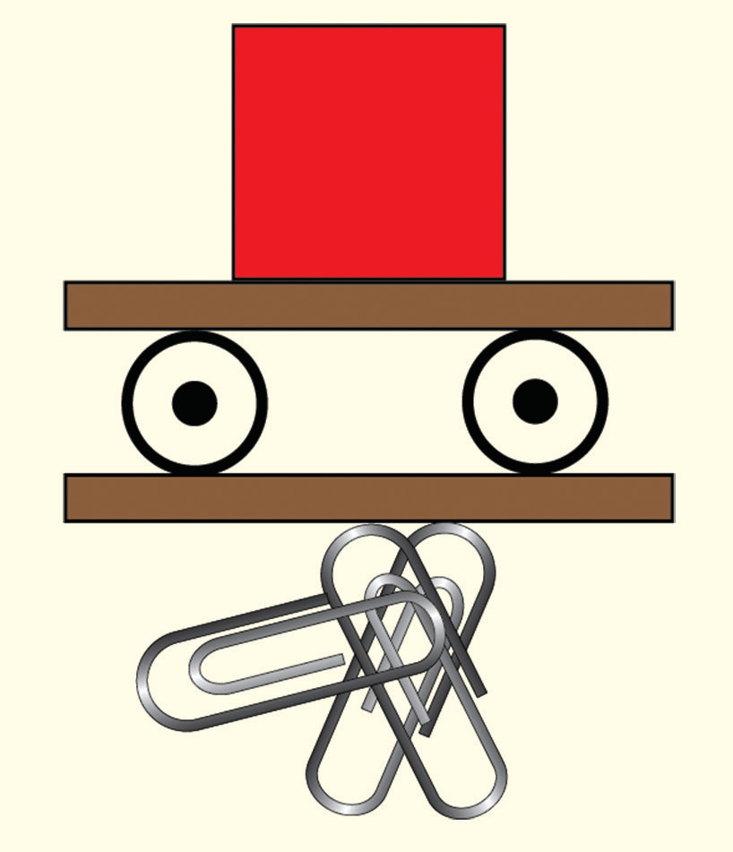
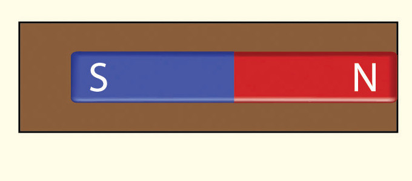
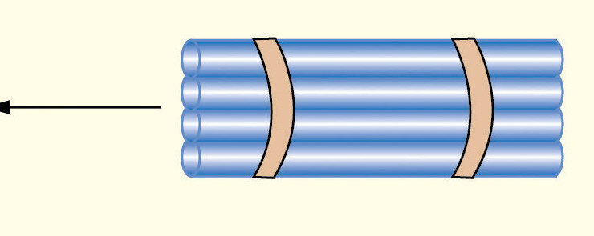
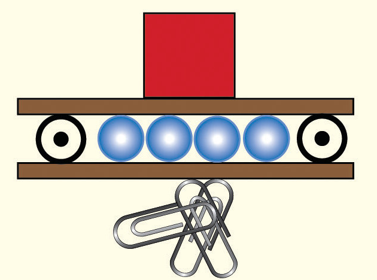
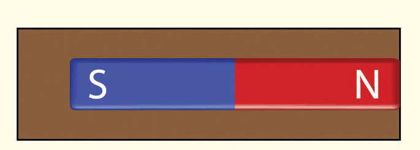
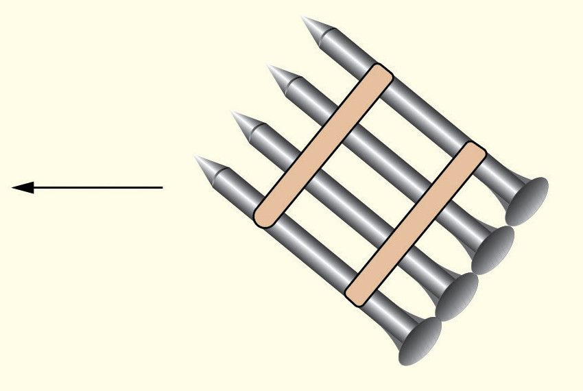
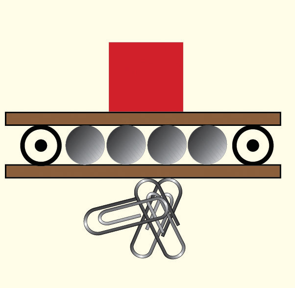

End view
Figure 3.41
5. Tape several drinking straws together side by side and insert them into the space between the two index cards as shown in Figure 3.42, then repeat step 4.
Top view
End view



Figure 3.42
6. Tape several iron nails side by side and insert them into the space between the two index cards as shown in Figure 3.43, then repeat step 4.
Top view
End view



Figure 3.43
Questions
(a) For each case, what happened to the paper clips? Why?
(b) Explain your results using the concept of magnetic shielding.